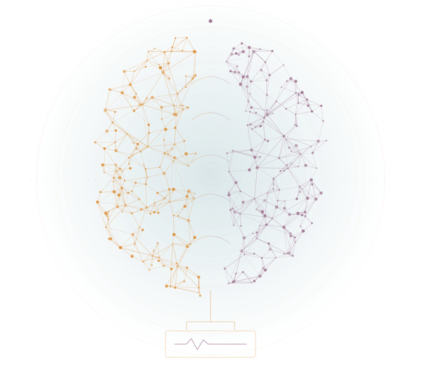

01
Start with the patient
Skin cells provide the starting point for patient-derived neurons, preserving the individual’s biological context.
PATIENT-DERIVED CELLSPersonalized neuroscience. In development.
A patient’s biology. A digital counterpart.
A new way to explore neurological therapies.
Bringing biology and computation together.

01 / THE CHALLENGE
Neurological therapies face a fundamental challenge: predicting how a particular patient will respond.
Animal models can miss the complexity of human biology. Digital simulations need biological data that reflects the individual. We’re building a bridge between the two, with the patient at its center.
02 / OUR APPROACH
We’re developing a connected platform that brings patient-derived neuronal networks into dialogue with computational models.
Skin cells provide the starting point for patient-derived neurons, preserving the individual’s biological context.
PATIENT-DERIVED CELLSNeuronal networks on a chip make it possible to study activity and responses in a controlled laboratory setting.
BRAIN ON A CHIPBiological recordings inform computer simulations, grounding the digital model in the patient’s neuronal activity.
BIOLOGY-INFORMED MODELSAI-assisted analysis aims to compare therapeutic responses and support more informed research decisions.
PERSONALIZED INSIGHTSOne connected workflow. The biological twin informs the digital twin, bringing experimental evidence into computational prediction.
03 / THE POSSIBILITIES
We’re building for the people advancing neurological research, from the laboratory bench to therapy development.
Explore patient-specific drug screening and disease models to inform preclinical development.
Connect neuronal recordings with analysis and modeling to investigate network behavior.
Investigate how biological and digital twins could complement existing research workflows.
Research-stage technology. Applications described here are development goals, not currently available clinical services.
04 / WHERE WE ARE
We’re at the beginning of a long-term mission to make neurological research more personal.
OUR STARTING POINT
A laboratory-validated proof of concept (TRL 3), with expertise spanning neuronal cultures, brain-on-chip systems and computational neuroscience.
NEXT
Building research relationships, developing analysis services and working toward an integrated biological and digital twin prototype.
OUR LONG-TERM DIRECTION
Working toward accessible analysis and simulation tools for partners in neuroscience and drug development.
05 / THE PEOPLE
Biology, engineering and computational neuroscience, brought together by a team working in Genoa’s neuroscience research community.
PhD student in computational neuroscience.
PhD student with experience in in vitro neuronal cultures.
Associate Professor. Expertise in iPSC disease modeling and digital twins. ERC grant recipient.
Researcher specializing in brain-on-chip systems.
Researcher specializing in biofabrication.
06 / A FEW ANSWERS
The biological twin is a laboratory model built from patient-derived neuronal cells. The digital twin is a computational model informed by biological recordings. HyBrain’s approach connects the two to study responses in a patient-specific context.
HyBrain is in research and development. We do not currently offer patient testing, diagnosis or treatment. Our immediate focus is developing the technology with research and industry collaborators.
We welcome conversations with neuroscience laboratories, pharmaceutical and biotech teams, contract research organizations, and investors interested in the early development of the platform.
Contact us using the section below. Tell us about your research, organization or interest in HyBrain, and we can start a conversation.
OPEN TO CONVERSATIONS
Exploring a research partnership, a potential application, or an investment? We’d like to hear from you.
hybrain.tech@gmail.com